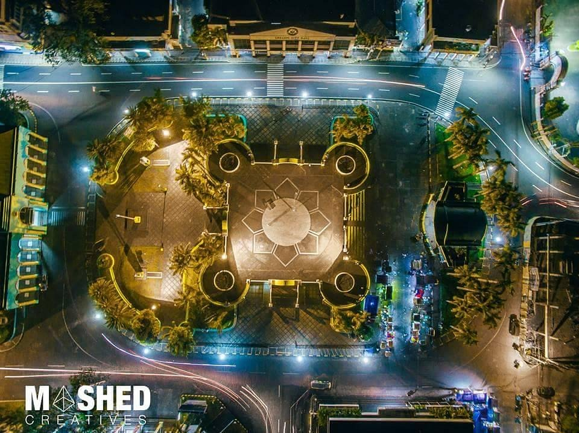
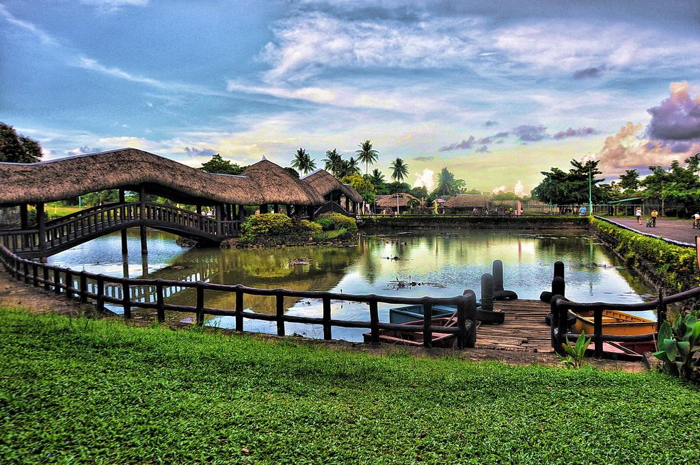

Lignon Hill Nature Park
This park is one of the most visited places in Albay, known for its walking paths, greenery, and great view of Mayon Volcano.

Peñaranda Park
Peñaranda Park is a public park in Legazpi where visitors can rest, walk, and enjoy the city atmosphere.

Eco Parks
Eco parks in Albay offer refreshing natural spaces where visitors can enjoy the environment and relax away from busy places.

Garden and Viewing Parks
These parks provide peaceful areas for rest, photography, and enjoying beautiful views of Albay’s landscapes.